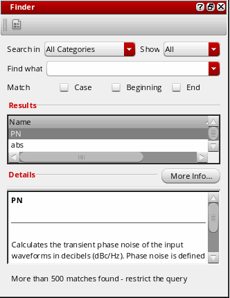
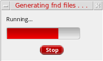
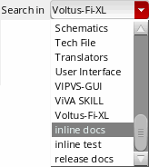
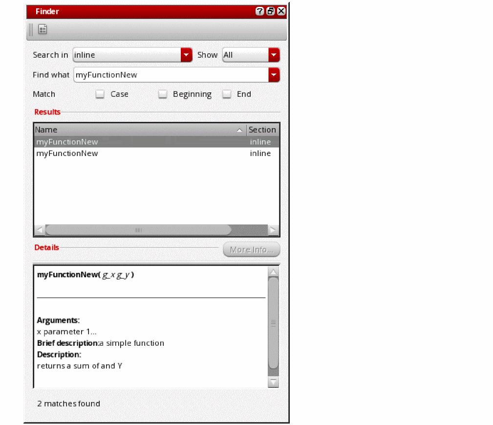

E
SKILL IDE Document Generation
As a SKILL programmer, you may need to reuse the code written by other developers or provide your code to other developers for integration. When it comes to programming, documenting the details of the code is as important as the code itself. Since the code evolves over time, it is imperative that the documentation stays synchronized with the code. The best way to achieve this is to embed the documentation within the code.
SKILL IDE’s inline documentation capability allows you to embed documentation strings within SKILL/SKILL++ functions, classes, and methods. These documentation strings describe the attributes of the code elements with which they are associated. For example, the documentation string for a SKILL function may contain the description, parameters, and return values for the function.
SKILL IDE also has a document generation utility called Finder Manager, which inspects the code containing inline documentation and generates finder-compatible documentation from it.
This chapter provides information on writing documentation-specific code in SKILL/SKILL++ and using Finder Manager to generate documentation from that code. It includes the following topics:
- Writing Documentation-specific Code
- Extracting Documentation using Finder Manager
- Viewing the Generated Documentation in Finder
Writing Documentation-specific Code
For the Finder Manager to extract documentation from the SKILL/SKILL++ source files, you need to insert inline documentation strings in the code blocks. Each inline documentation string in a code block is associated with a declaration.
The following section describes the elements of an inline documentation string.
Inline documentation strings are added right after the definition of a class, function, or method in the source file. Opening quotation “ and closing quotation “ mark the beginning and end of a documentation string.
Documentation strings may also contain some additional keywords that describe the attributes of classes, functions, or methods being defined. These keywords are identified by an @ symbol.
Keywords for Functions, Classes, and Methods in SKILL and SKILL++
The following table lists the keywords that are common for functions, classes, and methods in SKILL and SKILL++:
Table E-1 Keywords for Functions, Classes, and Methods
| Keyword | Description |
|---|---|
Inline documentation strings are supported for the following SKILL functions and classes: defun, procedure, nprocedure, defmethod, defgeneric, defglobalfun, globalProc, defclass, and ansiDefmethod.
Sample Inline Documentation Strings for Functions, Classes, and Methods in SKILL and SKILL++
Keywords for Classes and Methods in SKILL++
The following table lists the keywords that are specific to SKILL++ classes and methods:
Table E-2 Keywords for SKILL++ Classes
| Keyword | Description |
|---|---|
Table E-3 Keywords for SKILL++ Methods
| Keyword | Description |
|---|---|
Sample Inline Documentation Strings for Classes and Methods in SKILL++
In SKILL++ classes, the inline documentation strings are added after the slot list. For example:
In SKILL++ methods, the inline documentation strings are added after the specializer list. For example:
Output Formatting
SKILL IDE supports the following HTML tags for formatting the appearance of the documentation generated from the inline documentation strings:
-
<B>text</B>: To display the text in bold. -
<I>text</I>: To display the text in italics. -
<U>text</U>: To display underlined text. -
<BR>: To insert a line break in text. -
<COLOR=green>text</COLOR>: To specify the color of the text.
Extracting Documentation using Finder Manager
After you add inline documentation strings in your SKILL/SKILL++ source files, you are ready to generate finder-compatible documentation using Finder Manager. Finder Manager processes the code blocks containing inline documentation strings and saves the output in a finder (.fnd) file.
To create a finder file from your source file:
-
Start the Finder assistant by choosing Window – Assistants – Finder. The Finder assistant displays.
 - Click
-
In the Finder paths section, specify additional directories for Finder database files. When you launch the Finder assistant, Finder will look for finder database files (
*.fnd) under these directories.-
Click Add Finder Path (
) to add a new directory path in the Finderpaths section.
- Click Remove selected path from the path list ( ) to remove the selected directory path from the Finderpaths section.
-
Click Move path up in the list (
) or Move path down in the list () to move a directory path up or down the list. Moving a directory path up or down the list changes the order in which Finder will search the finder database files.
-
Click Add Finder Path (
) to add a new directory path in the Finderpaths section.
-
In the Generate documentation for finder (fnd) section, specify the required source and destination information:
-
In the Source field, browse or type the name of the directory that has the source files containing inline documentation strings.
-
In the Destination field, specify the directory path under which you want to save the generated finder (.
fnd) file. -
In the Section field, specify a section name for the generated finder (.
fnd) file. The default name isinline, which means the finder (.fnd) file will be created under a directory namedinlineunder your destination directory.Your finder (.Destination:fnd) file will be created two directory levels below the path you specify in the Destination field. For example, if your source file is namedinline.iland you specify the following information in the Destination and Section fields:/home/user/skillide
Section:inline_doc
A file namedinline.fndwill be created under:/home/user/skillide/SKILL/inline_doc/
-
In the Source field, browse or type the name of the directory that has the source files containing inline documentation strings.
-
Select the Overwrite existing files check box to overwrite any existing finder (.
fnd) file in the destination path. -
Select the Add to Finder paths check box to add the path of the generated finder (.
fnd) file in the$CDS_FINDER_PATHenvironment variable.
Finder loads its data from the paths specified in this environment variable. For more information, see Environment Variable for Specifying Additional Finder Data Directories. -
Click Generate to generate the finder (.
fnd) file. The Generating fnd files progress box displays.
After the file generation process completes, you can check the generated finder (.fnd) file under the directory path specified in the Generate documentation for finder (fnd) section.
You can also use a corresponding SKILL script, genFndFiles.il, which is located at tools/dfII/samples/skill/ in your Virtuoso installation directory.
The syntax to run it is as follows:
genFndFiles.il -ddirectory_with_SKILL_files-ooutput_directory-vlog_file
genFndFiles.il -d .fnd/source -o .fnd/output -v .fnd/log.txt
Viewing the Generated Documentation in Finder
After you have generated the finder (.fnd) file, you can view its contents using the Cadence SKILL API Finder tool or the SKILL IDE Finder assistant. If you selected the Add to Finder paths check box while generating the documentation, the contents of your finder file will automatically be imported into the finder database.
To view the generated documentation in Finder:
-
Start the Finder assistant by choosing Window – Assistants – Finder, or start Cadence SKILL API Finder from the CIW by choosing Tools – SKILL API Finder.
The Cadence SKILL API Finder window displays. Finder loads data from the finder database files. -
Because the contents of your finder file are automatically imported into the finder database, the section name you specify in the Section field of the Finder Manager window appear in the Search in drop-down list.
Select the appropriate category name from the Search in drop-down list. The data in your finder (.fnd) file appears in the Results area.

Return to top